Практичний досвід · журнал «ДентАрт» 2013 №3 (72)
Досвід застосування реставраційних матеріалів при лікуванні травматичних переломів коронок тимчасових зубів
Травматичні ушкодження зубів мають високу поширеність у дітей раннього дитячого і дошкільного віку. Серед причин, що призводять до втрати зубів, на другому місці після ускладненого карієсу — різні види травм.1 Частота травматичних ушкоджень у тимчасовому прикусі коливається від 10 до 20%.6-11
Найчастіше травмуються фронтальні зуби верхньої щелепи (80-90% усіх ушкоджень тимчасових зубів), при цьому на травму верхніх центральних різців припадає 70-75%, верхніх бічних різців — 8-13%, ікол — 0,9%. У 40% випадків травматичне ушкодження зачіпає два і більше зуби. Ушкодженням тимчасових зубів, що зустрічається найчастіше, є неускладнений перелом коронки — 35-37%.6-11 Більшість травм подібного типу призводить до руйнування менш ніж 50% коронкової частини зуба. Такий ступінь втрати твердих тканин дає можливість провести естетичну реставрацію з використанням композитних і компомерних матеріалів.3 На жаль, широко застосовувані для подібних клінічних випадків склоіономерні цементи не забезпечують довготермінового успішного клінічного результату (фото 1 а, б) і демонструють у віддаленому періоді спостереження ознаки порушення крайового прилягання матеріалу, явища вторинного карієсу, часткове або повне випадіння реставрацій.3
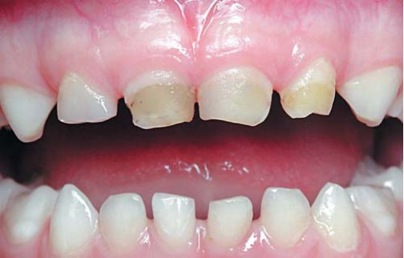
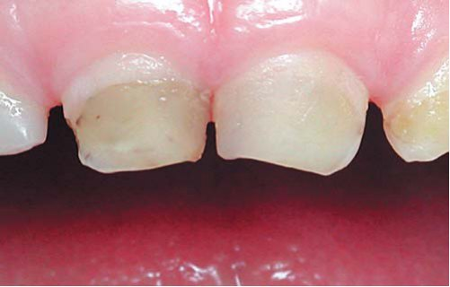
Фото 1 а, б. Зовнішній вигляд реставрацій, виконаних із склоіономерного цементу, на зубах 51, 61, 62. Відновлення зубів проведено рік тому з приводу неускладнених переломів коронок зубів. Зі слів мами, після лікування через постійні сколи робилися неодноразові корекції реставрацій. При огляді на момент звернення в клініку спостерігається зміна кольору реставрацій, порушення крайового прилягання, відкол частини реставраційного матеріалу.
Згідно з рекомендаціями Американської асоціації дитячих стоматологів (AAPD), при виборі композитної реставрації як методу відновлення тимчасових передніх зубів слід враховувати низку чинників :
- часову доцільність реставрації (терміни, що залишилися до зміни зуба);
- технічні вимоги, що застосовуються до реставраційного матеріалу (наприклад, необхідність ізоляції робочого поля);
- необхідність адекватної анестезії;
- карієс-ризик (вірогідність розвитку нових або рецидивуючих каріозних уражень);
- необхідність проведення ендодонтичного лікування в межах оперативно-відновного втручання;
- готовність дитини до співпраці при проведенні лікування;
- вартість лікування;
- очікування і співпрацю батьків.2
Згідно з рекомендаціями AAPD, композитну реставрацію не слід розглядати як метод вибору в таких випадках:
- за неможливості ізоляції операційного поля;
- за необхідності виконання великої за обсягом реставрації (яка охоплює кілька або усі поверхні зуба);
- у пацієнтів з високим ризиком розвитку карієсу (велика кількість каріозних уражень і/або вогнищ демінералізації у поєднанні з незадовільною гігієною порожнини рота).2
З урахуванням цих чинників неускладнений перелом коронки зуба слід вважати однією з найбільш рекомендованих клінічних ситуацій для застосування композитних матеріалів у тимчасовому прикусі.3, 5 Реставрація з композитного матеріалу у таких випадках забезпечить чудові естетичні характеристики, високі фізико-механічні властивості і довготривалий результат.
Клінічний випадок 1
Цей клінічний випадок демонструє можливість застосування компомера Дайрект Екстра при лікуванні неускладненого перелому коронок центральних тимчасових різців верхньої щелепи.
Батьки звернулися в клініку для відновлення зуба 51 у дитини віком 2 роки 1 місяць. Скарги на момент звернення — постійне травмування губи гострими краями зуба (фото 2 а, б). При зборі анамнезу з'ясовано, що місяць тому в результаті падіння сталася травма зубів 51 і 61. Тоді ж зуб 61 було відновлено склоіономерним цементом. Лікувальні заходи із зубом 51 не проводилися. Після комплексного стоматологічного обстеження поставлено діагноз — неускладнений перелом коронок зубів 51 і 61. План лікування передбачав відновлення зубів 51 і 61. Морфологія і обсяг тканин, втрачених у результаті травми, а також вік дитини у цьому випадку дозволяють розглядати реставрацію з компомера як найбільш оптимальний метод відновлення (фото 3-6).
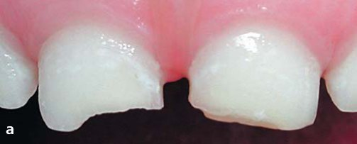
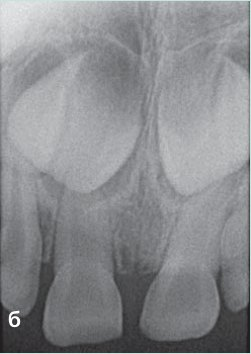
Фото 2 а, б. Початкова клінічна ситуація на момент звернення в клініку. Неускладнений перелом коронки зуба 51 у межах дентину. Неускладнений перелом коронки зуба 61 у межах дентину, лінія перелому закрита склоіономерним цементом.
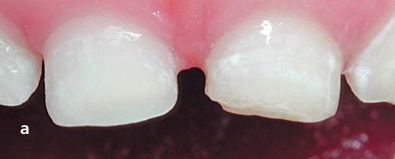
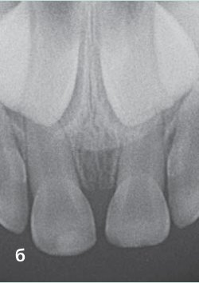
Фото 3 а, б. Зуб 51 був відновлений компомером Дайрект Екстра. Лікувальних заходів із зубом 61 на прохання батьків не проводили. Зуб 61 дитину не турбує, запропоновано диспансерне спостереження за зубом.
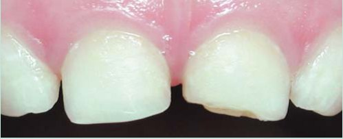
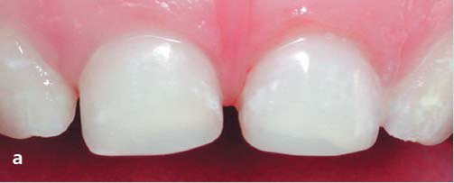
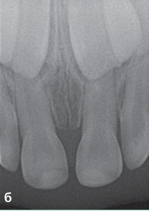
Фото 5 а, б. Зуб 61 відновлено компомером Дайрект Екстра.
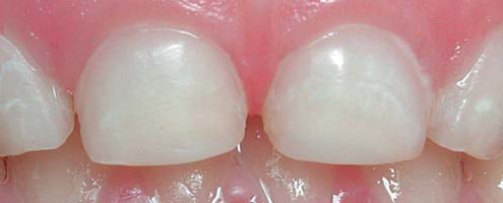
Клінічний випадок 2
Батьки трирічного хлопчика звернулися в клініку зі скаргами на вкорочення зуба 62 і забарвлювання його коронки впродовж останніх двох місяців (мал. 7 а, б).
Після комплексного стоматологічного обстеження поставлено діагноз — неускладнений перелом коронки зуба 62. У плані лікування для реставрації бічного різця було вибрано застосування мікрогібридного композитного матеріалу Амаріс і спрощеного протоколу адгезивної підготовки із застосуванням самопротравлюючої системи4 (фото 8 а, б).
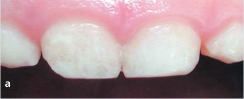
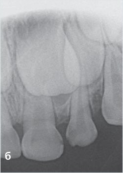
Фото 7 а, б. Неускладнений перелом коронки зуба 62 у межах дентину.
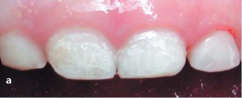
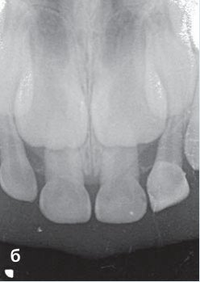
Фото 8 а, б. Зуб 62 відновлено композитним матеріалом Амаріс (TL). Триває диспансерне спостереження.
Література
- Ерадзе Е. П., Осипов Г. А., Носач Т. А. Острая травма зубов у детей (структурно-статистический анализ). // Российский стоматологический журнал. —№6. —2001. —С.18-19.
- American Academy of Pediatric Dentistry. Guideline on Pediatric Restorative. Originating Committee. Clinical Affairs Committee — Restorative Dentistry Subcommittee. —Revised 2008/ —Reference Manual. —V 33/ —№ 6. —11 / 12. P. 205-211.
- HYPERLINK «http://www.ncbi.nlm.nih.gov/pubmed?term=%22Cannon%20ML%22%5BAuthor%5D» Cannon ML. Advances in pediatric esthetic dentistry. HYPERLINK «http://www.ncbi.nlm.nih.gov/pubmed/14692218» Compend Contin Educ Dent. 2003 Aug;24(8 Suppl):34-9; quiz 62.
- HYPERLINK «http://www.ncbi.nlm.nih.gov/pubmed?term=%22Croll%20TP%22%5BAuthor%5D» Croll TP.Self-etching adhesive system for resin bonding. HYPERLINK «http://www.ncbi.nlm.nih.gov/pubmed/10902075» ASDC J Dent Child. 2000 May-Jun;67(3):176-81.
- Cunha R F; Pugliesi D M C; Percinoto C. Treatment of traumatized primary teeth: a conservative approach. Dental Traumatology. 23(6):360-363, December 2007.
- Rodriguez J G. HYPERLINK «http://www.ncbi.nlm.nih.gov/pubmed/17635358?ordinalpos=44&itool= EntrezSystem2.PEntrez.Pubmed.Pubmed_ResultsPanel.Pubmed_DefaultReportPanel.Pubmed_RVDocSum» Traumatic anterior dental injuries in Cuban preschool children. Dent Traumatol. 2007 Aug; 23(4):241-2.
- Sandalli N, Cildir S, Guler N. Clinical investigation of traumatic injuries in Yeditepe University, Turkey during the last 3 years. Dent Traumatol 2005; 21: 188-194.
- Saroglu I, Sonmez H. The prevalence of traumatic injuries treated in the pedodontic clinic of Ankara University, Turkey, during 18 months. Dent Traumatol 2002;18:299-303.
- Segura J J, Poyato M. Tooth crown fractures in 3-year-old Andalusian children. J Dent Child (Chic) 2003 Jan-Apr; 70(1):55-7.
- Shun-Te Huang, Szu-Yu Hsiao, Hsiu-Yueh Liu, Horng-Sen Chen, Chia-Hung Lo, Chin-Hua Wu, Nai-Chih Chi and Shu-Ya Lee: The Epidemiologic Survey of Traumatic Deciduous Teeth in Taiwan . J. Hard Tissue Biology., Vol. 14: 47-50, 2005. 12. Skaare AB, Jacobsen I. Primary tooth injuries in Norwegian children (1-8 years). Dent Traumatol 2005; 21: 315-319.